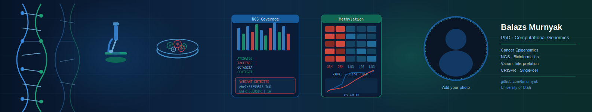

Molecular biologist and computational genomics scientist with 8+ years of postdoctoral and professional experience in cancer genomics, NGS data analysis, and clinical variant interpretation. I build Python-based bioinformatics pipelines for multi-omic data analysis, with a focus on cancer epigenomics and precision medicine.
Companion analysis to manuscript under review on PARP/CD274 co-regulation in glioma. Genome-wide methylation analysis integrating TCGA patient data, gene expression, and clinical outcomes.
Python tool for annotating and classifying somatic cancer variants from VCF files, with automated ACMG/AMP evidence-level classification and interactive HTML report generation.
Python (pandas, scipy, cyvcf2, lifelines, matplotlib)
R · Unix/Linux · bash
GATK · samtools · bcftools · MethylDackel · Snakemake · SLURM/HPC
Illumina · Oxford Nanopore · 10x Genomics · WGBS · scRNA-seq · Long-read
VCF annotation · ACMG/AMP classification · ClinVar · OncoKB · gnomAD
GDC/TCGA · ENCODE · GEO · CCLE · UCSC Xena · DepMap
CRISPR-Cas9 · Library prep · HMW DNA extraction · IHC · BSL-2 management
CRISPR-based functional genomics, long-read sequencing, and single-cell technologies for epigenetic regulation of hematologic cancers.
Author and co-author of research papers spanning cancer genomics, neuropathology, and psychiatric genetics.